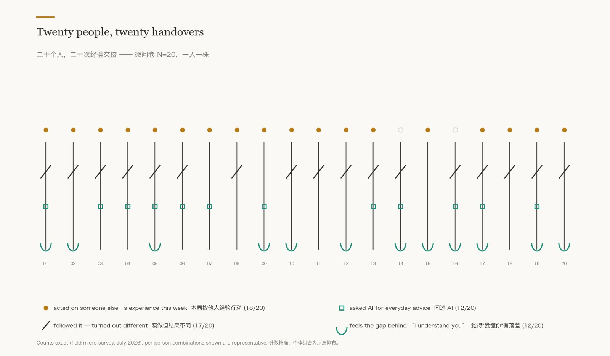
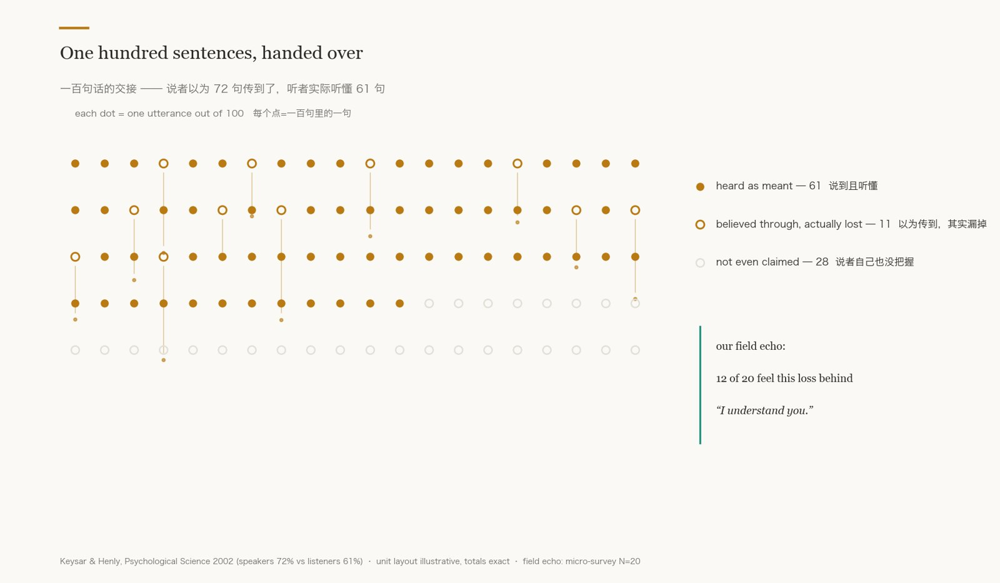
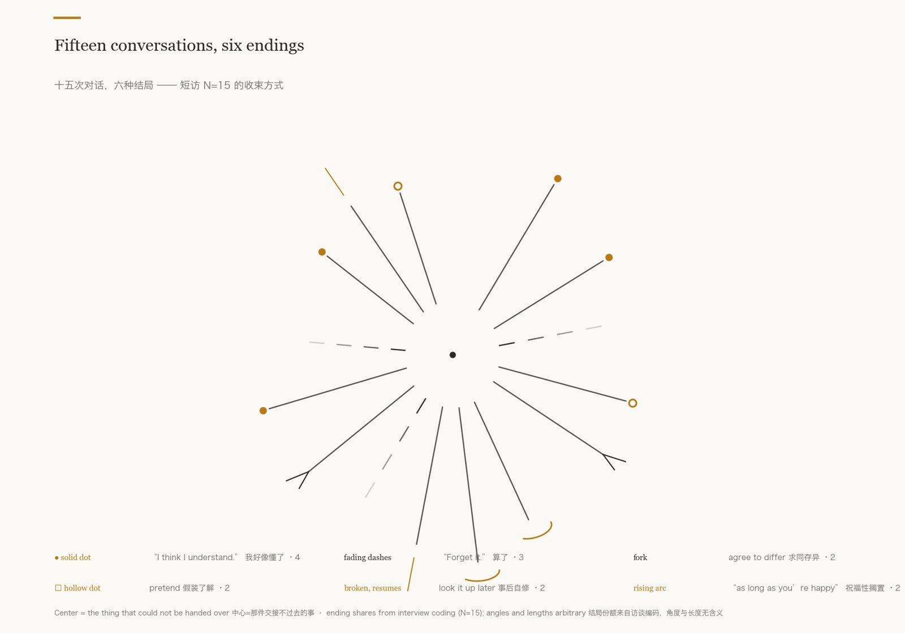

eleven films and eight voices on how understanding is negotiated when experience cannot be directly shared
PROJECT TYPEmulti-screen digital video 8-channel sound installation
ROLEconcept · research translation · spatial design
TIMELINE2024 work 2026 exhibition design
VENUEWarehouse XI Somerville MA · 300 sqm
01 · The Work
Eleven films grown from spoken worlds 十一段影像
We asked blind and low-vision friends to describe their worlds, then translated those descriptions into moving images. In the room the films are the size of a hand; here, they play at your size.
01
The Crane and the Moon
Someone described the moon as something near — near enough to install. So we hung it.
02 · THE THRESHOLD
Half not yet said; half already understood. The border keeps moving.
03 · BRIGHTNESS THAT REFUSES
That brightness is not for seeing — it forces the eyes shut.
04 · A CATHEDRAL OVERHEARD
A building never visited, built from adjectives overheard.
05 · STELES IN FOG
A shape without a name can still be remembered — by how it feels.
06 · ASSEMBLAGE AT DUSK
Sentences from different people piled into one dusk; together they resemble a home.
07 · THE WIRE SPHERE
It burns, wrapped in wire. The fire is small; it stays lit.
08 · A PLANET ON NO MAP
Give it a glowing horizon and a few yellow moons. It is wherever you say it is.
09 · THE DOORWAY
A sky described to her a thousand times. Seeing was never ours to finish.
10 · TWO CATS
Neither explains orange to the other. Some company precedes understanding.
11 · DAYTIME THROUGH PAPER
Light seen through paper. He said: this is my daytime. We placed the camera inside the paper, too.
The captions are the translators' second readings — not quotations. Some films combine the descriptions of several storytellers. 影像旁文字为转译者再读，非讲述者原话。
Eight voices, one sentence 八个声道
Eight channels fill the dark from eight corners; they never pair with the screens. To see, you walk to an image; to listen, you stand where the channels balance. Every voice ends on the sentence this work is named after.
Combined stereo reference, 11'09". In the room they play as eight independent sources. The sound layer is complete in itself: for blind and low-vision visitors it is the entire work. 八声道集合参考版；声音层本身即完整作品。
Installation views, 2024 — small screens in a blackout hall; fractured-glyph neon; the sentence as a white neon resting on the floor.
02 · Research
Everyone lives on second-hand experience — and the handover always leaks 调研
Field research (short interviews N=15 · bilingual micro-survey N=23, July 2026) drawn one person at a time, beside representative surveys and controlled experiments that find the same condition.



82%
of U.S. adults at least sometimes read online reviews before buying something new.
"Sweet like sugar — but the small part that isn't sugar is usually the part that matters."
P13 · the good-enough theory of understanding, from the field 蜂蜜的甜与蔗糖的甜
Field data is a small qualitative sample; the surveys and experiments are representative or controlled. Shown side by side, never interchanged. 自采为小样本定性指示；两层并置，不互相冒充。
03 · Appendix — Taking It to a Room
Four halls, one light script 展览设计（附）
A proposed staging at Warehouse XI: a dim buffer, a blackout star field of fifteen hand-height screens, a low-lit echo hall with a braille sentence wall and a card taken in the dark, a bright lounge where the card is finally read.
1 · BUFFERdim 微光
2 · STAR FIELDblackout 全黑
3 · ECHOlow 昏暗
4 · LOUNGEbright 明亮
Floor plan — geometry from the author's CAD.Axonometric — route identical to plan; two original neons placed back in.
Overview — four halls, one light scriptHall 3 · EchoHall 4 · Lounge
Renders are digital visualizations from the layout data — not photographs. 效果图为布展数据渲染，非照片。